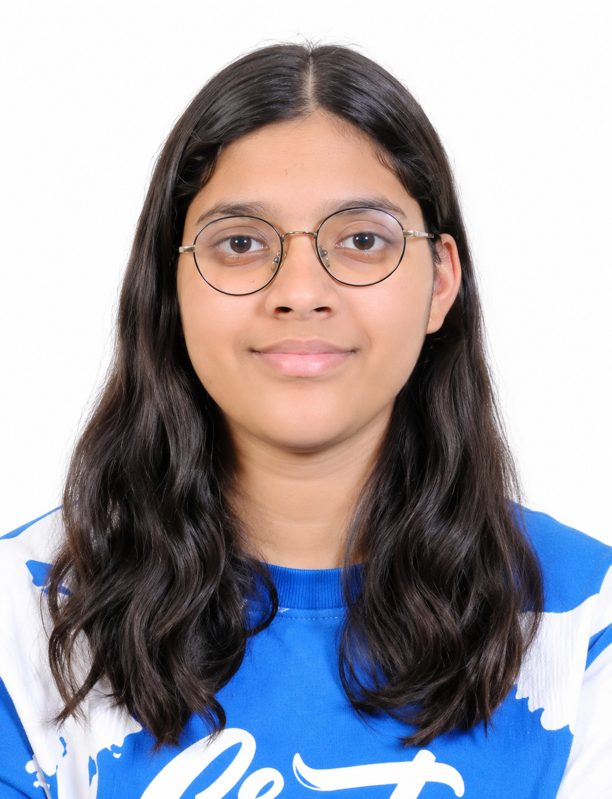

National champion · Junior Girls U-18
63rd National Roller Skating Championships, Visakhapatnam — representing Punjab.

STUDENT · ATHLETE · PERFORMER
A curious student, national-level roller hockey player, and Kathak dancer — learning, competing, and growing with every new experience.
I’m driven by the challenge of doing different things well — solving problems in class, competing on wheels, finding rhythm through dance and learning from people around the world.
As a Class XI Non-Medical student at Delhi Public School, Patiala, I’ve worked to bring the same discipline to academics, sport and the arts. Each experience has taught me something different about focus, resilience and working with others.
A strong academic foundation and a love for learning — with a particular interest in mathematics, physics and computer science.
subjects at A1 grade
Overall A1 in six subjectsClass XI (Non-Medical), 2025–26: 89.8% · Mathematics 93 · Physics 91 · Computer Science 91 · Chemistry 89
ROLLER & INLINE HOCKEY
Representing Punjab at national championships since 2019 has taught me to trust the process: train with purpose, play for the team and keep showing up.
From Cadet to Junior and Senior categories — a record built season by season.
63rd National Roller Skating Championships, Visakhapatnam — representing Punjab.
Silver at the 37th Punjab State Championship, Mohali; Gold at the 35th District Championship, Patiala.
62nd National Roller Skating Championships — representing Punjab.
Jammu — representing Punjab.
60th National Roller Skating Championships, Bengaluru — representing Punjab.
57th National Roller Skating Championships, Visakhapatnam — Cadet Girls.
2024–25 · Punjab State — Silver; District Patiala — Gold
2023–24 · Punjab State — Bronze; District Patiala — Gold; selected for Khedan Watan Punjab Diyan State Games (U-17)
2022–23 · Punjab State — Silver; District Patiala — Gold
2021–22 · Punjab State — Silver; District Patiala — Gold
2020–21 · Punjab State — Silver; District Patiala — Gold
2019 · District Patiala — Gold
Recognition · Delhi Public School Patiala Certificate of Achievement for a National-Level Skating Gold Medal, October 2025.
Different stages, new perspectives and opportunities to learn how to lead, listen and express.
Nritya Visharad (Part I), Year 4 — A+ in theory and practical, 2025. Also trained through Kolkata Charukala Society, with First Division with Distinction in 2021–23.
Read highlights ↗Delegate for Portugal in the UNCSW Committee at DPSP Model United Nations 2024; completed the AFS India domestic exchange with Children's Academy, Mumbai.
Read highlights ↗The Duke of Edinburgh’s International Award — Bronze, received 30 August 2024. A reminder that progress comes from commitment and trying new things.
Read highlights ↗Selected performances and memorable moments from my journey.
Selected performance · 12:35–15:35 (3 minutes)
My goal is to keep learning, keep challenging myself and bring the same energy to every opportunity I’m given.
— ANGEL GARG
I look forward to bringing curiosity, discipline and an open mind to my undergraduate journey and the wider academic community.
Say hello ↗Contact email to be updated before publishing.